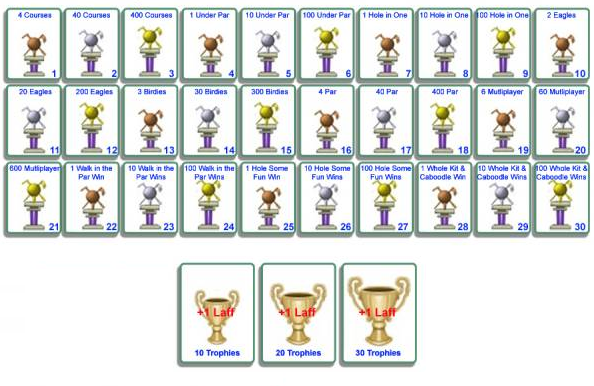

Golfing is a fun, sometimes tedious, game to play by yourself or with toon friends, and it is yet another way to earn an additional 3 laff points for your toon! Any toon at any level can go to Chip N' Dales Golfing and put those putt-putt skills to play.
Golfing in Toontown is very similar to an online mini-golf game. Toons can play mini-golf over a series of holes to earn laff boosts and golfing trophies. Golfing can be played individually or with additional toons, up to a capacity of four. Each toon takes a turn until everyone gets the ball into the hole or reached a limit of three shots over par.
So, you might be wondering how to get to Chip N' Dales Golf course. This playground can be found through a golf themed tunnel in Chip N' Dales Acorn Acres (displayed right). To get to Chip N' Dales Acorn Acres, there is a log tunnel near the pond in Donald's Dock (circled, displayed left). Once visited, you will have teleport access.
There are three courses available:
| Course | Number of Holes | Difficulty | Kart Color |
|---|---|---|---|
| Walk in the Par | 3 | Easy | Green |
| Holesome Fun | 6 | Medium | Yellow |
| The Hole Kit and Caboodle | 9 | Hard | Red |
Each course randomly selects holes that will be played in succession. At the end of a course, the player with the lowest number of points will be the winner, just like real mini-golf! Each golfing course can be accessed via the golfs karts located all around the golfing playground, as shown in the image below.
When starting a game of golf, the instructions and controls will be displayed at the bottom of the screen. The main controls are the left (←) arrow key, the right (→) arrow key, and the CTRL Upon starting each hole, a toon will be set-up at the beginning of the hole, as shown below. Always in the corner of the screen will be a pencil ✐. If clicked, it will display the current scores for all holes played for all golfers.
Now we have reached the exciting part of golfing... There are 3 total laff points that can be earned by golfing! To get those laff boosts, the golfing trophies must be earned! There are 30 total earnable trophies and for each 10 earned, a laff boost is rewarded. You think you are up for the challenge?
